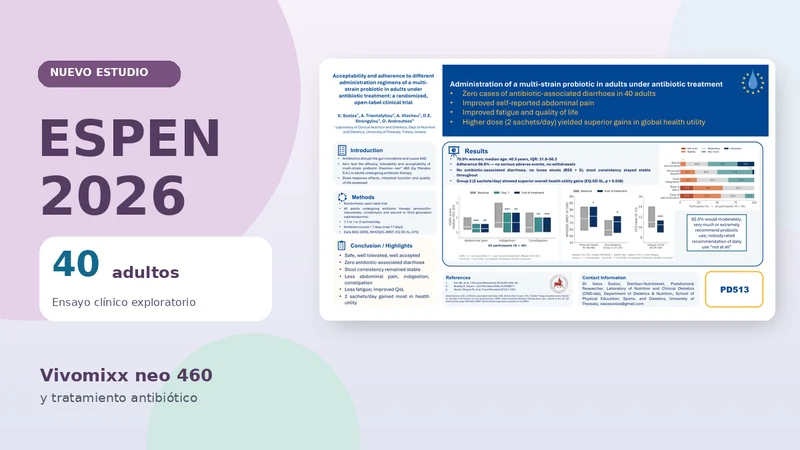

Nueva investigación · ESPEN 2026
Vivomixx neo 460 y antibióticos: qué revela un nuevo estudio clínico presentado en ESPEN 2026

Un nuevo ensayo clínico realizado en adultos que recibían antibióticos aporta datos sobre el uso de Vivomixx neo® 460 durante ese tratamiento. La investigación, presentada en el congreso ESPEN 2026, evaluó la tolerancia, la adherencia y los síntomas digestivos de 40 participantes que tomaron el probiótico en uno de dos regímenes.
Los investigadores no observaron episodios de diarrea asociada a antibióticos durante el seguimiento y registraron cambios favorables en algunos síntomas gastrointestinales y medidas de bienestar. Son observaciones interesantes, pero deben interpretarse con cautela: el estudio no incluyó un grupo que recibiera antibióticos sin el probiótico, por lo que no permite demostrar que Vivomixx neo haya prevenido la diarrea.
¿Por qué se estudian los probióticos durante un tratamiento antibiótico?
Los antibióticos actúan contra las bacterias responsables de determinadas infecciones, pero también pueden modificar la composición y el funcionamiento de la microbiota intestinal. Algunas personas presentan molestias digestivas o diarrea durante su uso. Por eso existe interés científico en estudiar formulaciones probióticas específicas como acompañamiento, sin reemplazar el tratamiento indicado.
Si quieres entender mejor este contexto, puedes consultar nuestra guía sobre probióticos y antibióticos: qué conviene saber antes de combinarlos.
Cómo se realizó el ensayo
El equipo de la Universidad de Tesalia, en Grecia, realizó un ensayo aleatorizado y abierto —es decir, los participantes y los investigadores conocían el régimen asignado— con 40 adultos que estaban recibiendo antibióticos como amoxicilina con ácido clavulánico, clindamicina o determinadas cefalosporinas.
- Dos grupos: los participantes fueron asignados a recibir uno o dos sobres diarios de Vivomixx neo 460.
- Duración: la suplementación se mantuvo durante el ciclo de antibióticos y siete días adicionales, hasta un máximo de 17 días.
- Evaluaciones: consistencia de las heces, síntomas gastrointestinales, fatiga, calidad de vida, percepción del estado de salud, adherencia y aceptación.
El objetivo incluía estudiar la aceptabilidad de los regímenes y explorar diferencias entre ellos. Las cantidades utilizadas describen el protocolo de investigación y no constituyen una recomendación de dosis para el público.
Los cinco hallazgos principales
1. No se observaron casos de diarrea asociada a antibióticos
Durante el periodo evaluado no se registraron casos de diarrea asociada a antibióticos ni heces clasificadas como sueltas en la escala de Bristol, y la consistencia se mantuvo estable. Es un resultado descriptivo de los 40 participantes; sin un grupo comparador sin probiótico, no se puede saber cuántos episodios habrían ocurrido de otro modo.
2. Mejoraron algunos síntomas digestivos autoinformados
Los participantes comunicaron una evolución favorable en las escalas de dolor abdominal, indigestión y estreñimiento. Estas mediciones son relevantes para conocer la experiencia de las personas, aunque no equivalen por sí solas a una prueba definitiva de eficacia.
3. Se observaron cambios favorables en fatiga y calidad de vida
Los cuestionarios del estudio reflejaron una reducción de la fatiga y una mejoría en medidas de calidad de vida durante el periodo de suplementación. El diseño abierto y la ausencia de placebo limitan la capacidad para atribuir esos cambios exclusivamente al producto.
4. Hubo una diferencia entre los dos regímenes en una medida global de salud
El grupo que recibió dos sobres diarios presentó una mayor mejoría en la medida global de estado de salud EQ-5D-5L (p = 0,038) frente al grupo de un sobre. Este resultado corresponde a ese indicador y a esta muestra; no demuestra que dos sobres sean, en general, la mejor pauta para todas las personas.
5. La adherencia fue alta y no se notificaron eventos adversos graves
Los investigadores registraron una adherencia del 98,6 %, sin abandonos ni eventos adversos graves durante el seguimiento. Además, el 92,5 % indicó que recomendaría el uso de probióticos en un grado moderado, alto o muy alto. Estos datos hablan de la aceptación observada en el ensayo, no de una garantía universal de seguridad.
Qué aporta esta investigación y qué todavía no podemos concluir
El trabajo aporta información clínica directa sobre Vivomixx neo 460 en una situación concreta: adultos sometidos a antibioticoterapia. En particular, permite describir la tolerancia y la experiencia comunicada por los participantes durante un seguimiento corto.
Sin embargo, se trata de un estudio pequeño, abierto y de corta duración. Al comparar dos pautas de probiótico, sin placebo ni grupo sin suplementación, no permite establecer causalmente la prevención de diarrea por antibióticos, generalizar resultados a otras poblaciones ni determinar una pauta universal. Además, los resultados que comentamos proceden de un póster de congreso; no deben confundirse con un artículo clínico completo sometido a revisión por pares.
Para interpretar la evidencia de una fórmula concreta también importa distinguir entre investigaciones preclínicas y ensayos en personas. Puedes conocer ese contexto en nuestro artículo sobre otro estudio de Vivomixx neo 9 y sus límites y en la guía para evaluar la evidencia de un probiótico.
¿Qué significa para quienes utilizan antibióticos?
Este ensayo es un avance en el conocimiento de la formulación, pero no modifica por sí solo las indicaciones médicas ni las instrucciones de uso del producto. Los antibióticos prescritos deben tomarse como se indica. Si estás valorando usar un complemento alimenticio durante ese periodo, consulta a tu médico o farmacéutico, especialmente si tienes una enfermedad importante o defensas disminuidas.
Para conocer los formatos disponibles puedes consultar las diferencias entre los sobres y las cápsulas de Vivomixx neo.
Preguntas frecuentes
¿El estudio demuestra que Vivomixx neo previene la diarrea por antibióticos?
No. Aunque no hubo casos en la muestra, ambos grupos recibieron el probiótico y faltó un grupo sin suplementación. El resultado es alentador, pero no prueba prevención.
¿Es mejor tomar dos sobres diarios que uno?
La diferencia estadística comunicada se observó en una medida global de salud (EQ-5D-5L) dentro de este ensayo. No debe interpretarse como una recomendación de dosis. Sigue las indicaciones del producto y de tu profesional de salud.
¿Se publicó el ensayo en una revista científica?
La información analizada fue presentada como póster científico en ESPEN 2026. El resumen de congreso no sustituye la evaluación de un artículo completo revisado por pares.
¿Puedo usar un probiótico junto con un antibiótico?
Es una decisión individual. Consulta al profesional responsable de tu tratamiento y no suspendas ni sustituyas el antibiótico por un complemento alimenticio.
Fuentes de esta publicación
- Svolos V., Triantafyllou A., Vlachou A., Strongylou D. E., Androutsos O. Acceptability and adherence to different administration regimens of a multi-strain probiotic in adults under antibiotic treatment: a randomized, open-label clinical trial. Universidad de Tesalia. Póster PD513 presentado en ESPEN 2026. Consultar el póster científico original (PDF).
- Registro público del ensayo en ClinicalTrials.gov: NCT07380009.
Contenido informativo publicado el 26 de octubre de 2026, basado en los resultados comunicados en ESPEN 2026. Vivomixx neo® es un complemento alimenticio, no un medicamento. Este artículo no sustituye la consulta profesional ni supone una recomendación de tratamiento.
Conoce Vivomixx neo® en Venezuela
Revisa sus presentaciones y la información de uso y conservación del producto. Para dudas relacionadas con medicamentos, consulta a tu profesional de salud.
Ver presentaciones